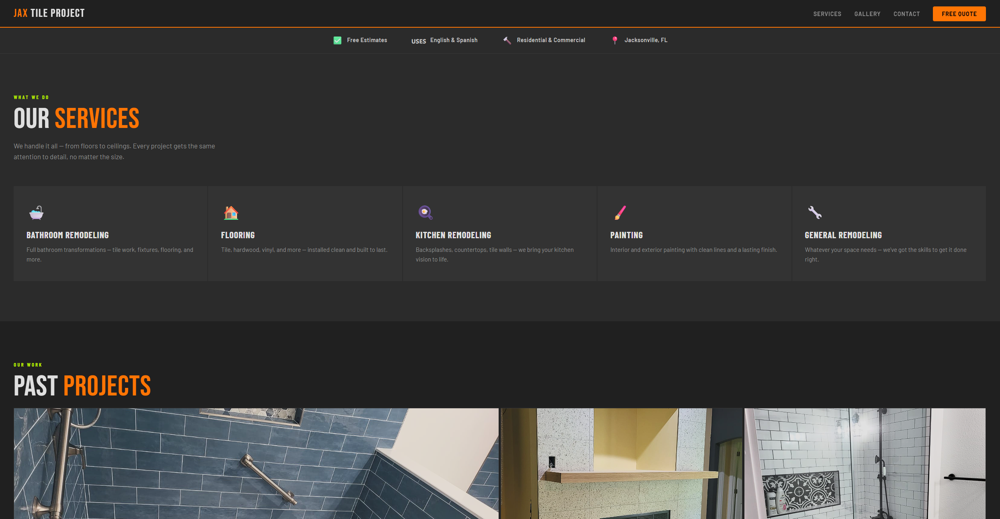

Veiled Construct (Released)

A released title focused on atmosphere and mechanical precision. Technical Win: Developed a custom AI Behavior Tree system that managed complex state transitions while preventing animation "popping" and logic conflicts during high-intensity combat.
Play on Itch.io | Watch GameplayAI & Combat Prototypes
A collection of modular systems built entirely in Blueprints. Includes robust enemy state machines, projectile-based combat, and dynamic movement components designed for rapid UE5 prototyping.
General Remodeling & Flooring Platform

A full-scale commercial website developed for a home remodeling business. Built to streamline customer quotes and information delivery.
- Localization: Integrated a bilingual toggle supporting English and Spanish for all site content.
- Dynamic Lead Generation: Custom contact form integration that triggers direct emails to staff for real-time quote requests.
- Responsive UX: Designed a mobile-first interface to allow clients to view project galleries and request info on-site.